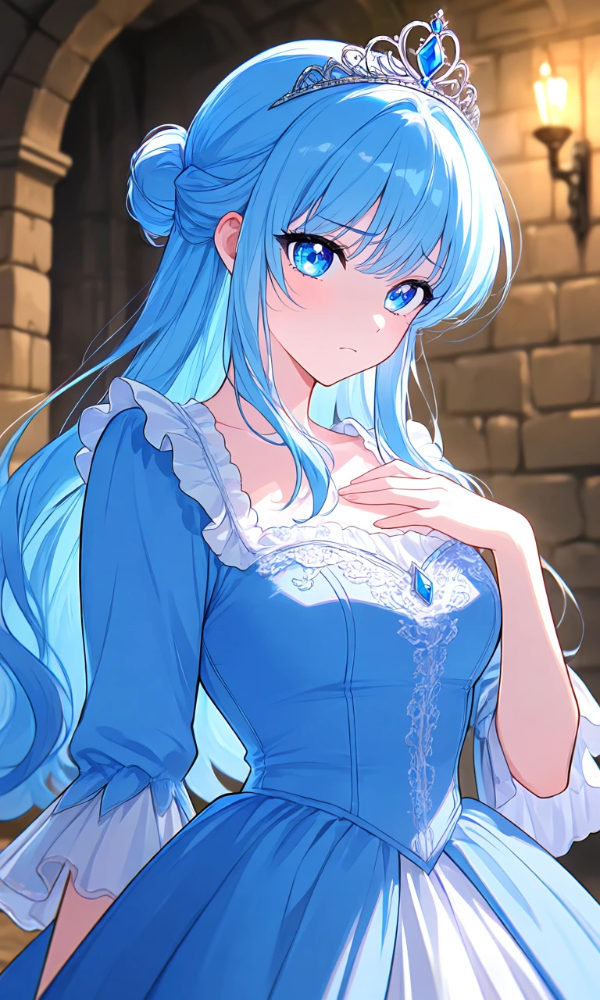
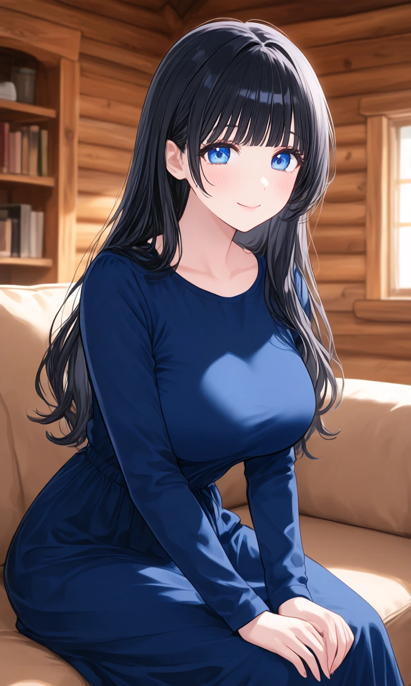
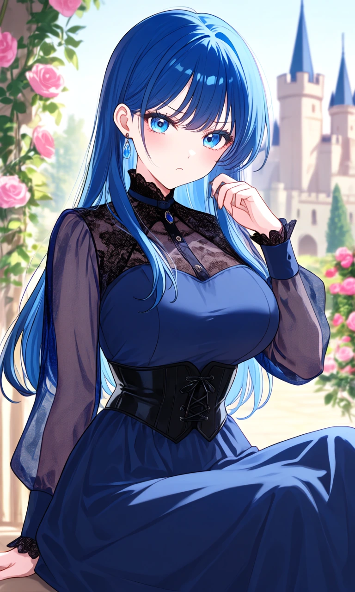
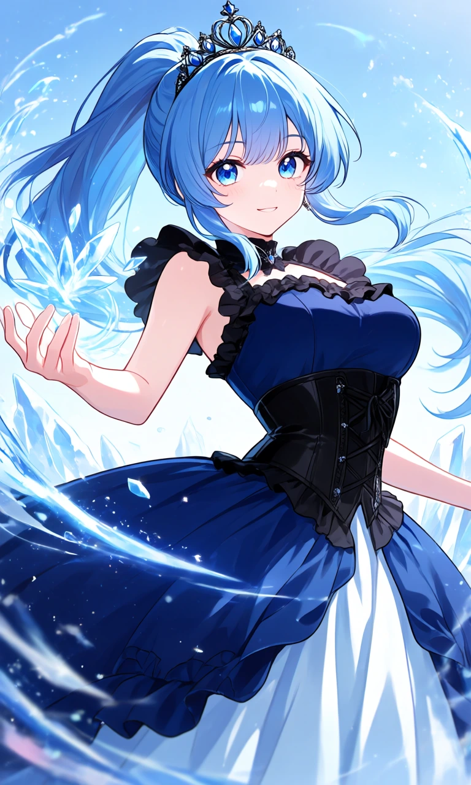
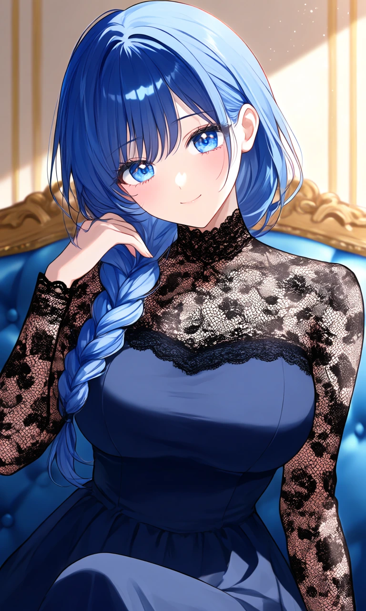

Clara
Female · Half-Fairy/Half-Human

Season 1 Part 1


Character Prompt
The long blue hair woman has big, cute blue eyes and large breasts. Her hair is half up with a big hair bun and her bangs cover her forehead.
Main Outfit
She’s wearing a light blue princess dress with white frill. She is wearing 3/4 sleeves. She is wearing a silver tiara with blue diamond gems.
Season 1 Disguise


Character Prompt
The long black hair woman has big, cute blue eyes and large breasts. Her bangs cover her forehead.
Main Outfit
She wears a plain long sleeve navy dress.
Season 1 Part 2


Character Prompt
The long blue hair woman has big, cute blue eyes and large breasts. Her bangs cover her forehead.
Main Outfit
She wears a long sleeve navy dress with black trim, her sleeves are transparent navy color. She wears a black corset.
Season 2


Character Prompt
The long blue hair woman has her hair in a high ponytail and has big, cute blue eyes and large breasts. Her bangs cover her forehead.
Main Outfit
She wears a sleeveless navy princess dress with black frill trim. The sleeves have black frill trim and black corset. She is wearing a black tiara with blue diamond gems.
After Season 2


Character Prompt
The long blue hair woman wears her hair in a single loose side braid and has big, cute blue eyes and large breasts. Her bangs cover her forehead.
Main Outfit
She is wearing a navy dress with black lace trim. The long sleeves are black lace with black lace high neck.